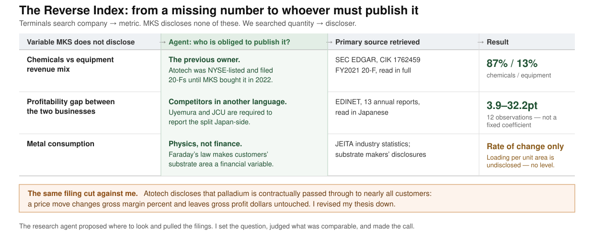
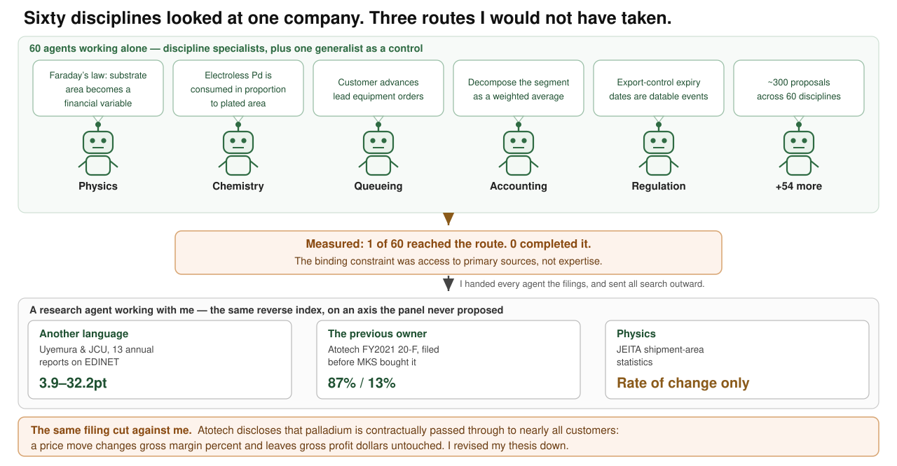

MKS Inc. owns a chemistry business it does not break out: no chemistry revenue, no chemistry margin. That was the number our pitch needed. Two kinds of AI agents went looking for it.
Discipline specialists (physics, chemistry, queueing, accounting, regulation…) plus a generalist control. One reached the right route. None completed it. They ran out of road on access to primary documents, not on expertise.
Read MKS's own 10-K, found that three of its chemistry competitors are Japanese, pulled 13 of their annual reports, and measured the chemistry-versus-equipment margin gap MKS won't show.
Terminals search company → metric. When the company discloses nothing, search the other way: for the missing number, who is obliged to publish it?
Japanese listed companies report their chemistry and equipment segments separately. MKS named them; their filings answer the question MKS doesn't.
| What MKS doesn't disclose | Who has to | Result |
|---|---|---|
| Chemistry vs equipment revenue mix | The previous owner. Atotech filed 20-Fs as an NYSE company until MKS bought it in 2022 (FY2021 20-F, read in full). | 87% / 13% |
| Profitability gap between the two businesses | Competitors, in another language. Uyemura and JCU, 13 annual reports on EDINET, read in Japanese. | 3.9–32.2pt 12 observations, not a fixed coefficient |
| Metal consumption | Physics, not finance. Faraday's law ties plated metal to substrate area; JEITA industry statistics give the area. | rate of change only loading per unit area is undisclosed |

The first run handed each specialist the question and let it search. It failed for a reason that had nothing to do with intelligence.

Most multi-agent investment setups produce a view. This harness exists to delete the ones that can't be defended.
| 60 agents working alone | Proposed routes across sixty disciplines. One reached the right one; none finished it. Never proposed the Japanese filings. |
| A research agent working with me | Read MKS's 10-K competitor list, identified the three Japanese companies, pulled their earnings releases and 13 annual reports, and used them as a control group. |
| Me | Asked the question (why does MKS's Japanese business matter?), judged which numbers were comparable, and made the call, including revising the thesis down. |